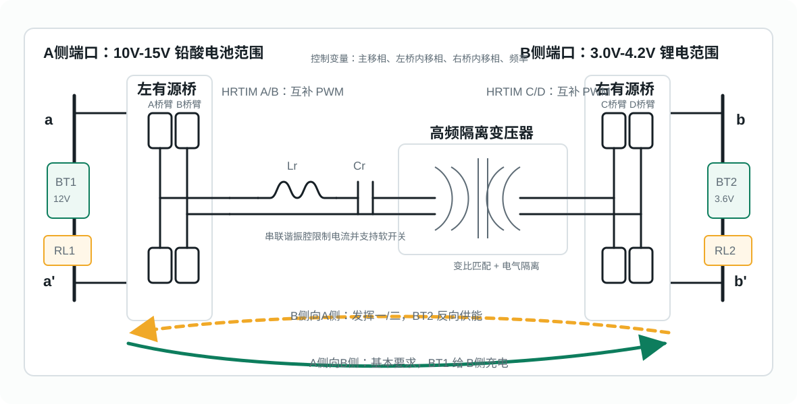
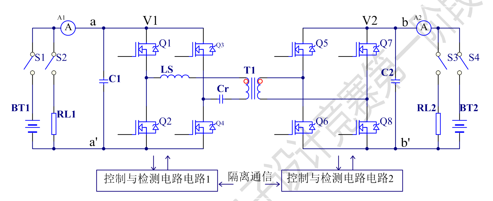

A侧供电，B侧充电
S1、S3 导通，S2、S4 断开。BT1 由 10V-15V 直流稳压源供电，RL2 工作在 CV 模式。
- B侧电压不高于 3.0V 时，输出 0.5A 预充电流。
- B侧达到 4.2V 后，保持 4.2V 恒压输出。
- 3.0V-4.2V 区间内，B侧输出电流可设为 0.5A-3.0A。
zhongdui_srdab | B题 串联谐振有源双桥试验装置
本站把题目 PDF、主电路框图、调制策略和 STM32G474 工程代码整理成一份可公开访问的项目说明， 用于展示从竞赛任务到工程实现的完整路径。
Task Definition
装置有 a/a' 与 b/b' 两对端口，通过高频变压器隔离传输功率，前后级控制与通信也需要隔离。 A1、A2 为直流电流表，检测与控制电路从主电路中取电。
S1、S3 导通，S2、S4 断开。BT1 由 10V-15V 直流稳压源供电，RL2 工作在 CV 模式。
S1、S3 断开，S2、S4 导通。BT2 由 3.0V-4.2V 直流稳压源供电，RL1 工作在 CV 模式。
S1、S2、S4 导通，S3 断开。BT1 为 15.0V、1.0A 限流源，BT2 为未充满 18650 锂电池。
Topology
题目框图的核心是两个有源桥、串联谐振腔和隔离变压器。A侧适配 12V 铅酸电池范围， B侧适配单节锂离子电池范围，功率方向由主移相符号、端口条件和状态机共同决定。

由 A、B 两组半桥构成，通过 HRTIM 输出互补 PWM，等效产生高频方波电压。
Lr 与 Cr 形成电流通道，限制尖峰并塑造谐振电流，为软开关创造条件。
完成电气隔离与变比匹配，是题目要求“功率隔离传输”的关键部件。
同步整流或逆变取决于功率方向；B侧电流、电压直接参与预充、恒流和恒压判断。

Modulation
工程代码实际围绕 TPS 展开：主移相控制功率方向与粗功率，左桥内移相和右桥内移相用于调节等效脉宽、 降低环流并改善软开关。下面把常见方式与本工程变量对应起来。
单移相让两侧全桥都输出 50% 占空比方波，只改变原边方波和副边方波之间的相位差。 主移相角为正时能量从一侧流向另一侧，符号反过来时功率方向也反转。
优点是实现简单、易于调试；缺点是在 12V 与 3V-4.2V 这种宽电压比场景下，单靠主移相容易带来较大环流， 低功率段效率和软开关范围都会受影响。
双移相在 SPS 的基础上增加桥内移相，使其中一侧或两侧的等效输出脉宽不再固定。 这样可以把“传多少功率”和“桥臂电流形状”分开一点，降低 RMS 电流。
对 SR-DAB 来说，DPS 能让谐振腔电流更接近需要的形状，尤其在预充和小电流控制时， 比单移相更容易避免主移相过小导致的调节分辨率不足。
三重移相有三个控制变量：主移相 main_phase_deg、左桥内移相 left_inner_deg、
右桥内移相 right_inner_deg。工程把主移相限制在 -90° 到 90°，
内移相限制在 0° 到 120°，默认 PWM 频率为 20kHz。
决定主要功率方向和粗调电流，正负号对应双向传输。
改变左桥等效脉宽，参与细调、超细调和软开关窗口修正。
改变右桥等效脉宽，在 B侧充电和反向工况中承担精细电流校正。
代码中的 TPS_0、TPS_1、TPS_2 分别覆盖基本要求、反向充电和发挥二工况；
TPS0_4_2 还提供针对 4.2V 锂电目标的扫描、寻优和种子点机制。
扩展移相通常把一个桥的桥内移相与主移相联动，或者固定一个内移相后调另一个内移相。 它比 TPS 自由度少，但比 SPS 更适合宽电压范围。
在本项目中，EPS 可以作为 TPS 的简化调参入口：先用主移相建立功率方向，再只开放一侧内移相做效率和波形优化。 这样现场调试更稳，参数也更少。
串联谐振腔的谐振频率由 Lr 和 Cr 决定。靠近谐振点时传输能力增强，远离谐振点时等效阻抗上升。 变频调制可以作为移相控制的辅助量，用于改善轻载、预充或保护边界。
工程提供 PWM_SR_DAB_SetFrequencyHz() 接口，频率范围为 10kHz-100kHz，默认 20kHz。
因为题目更强调端口电流和截止电压，本项目把 TPS 电流闭环放在主位置，变频作为可扩展控制量。
Control Strategy
固件不是直接把电压误差一次性变成大移相，而是按 ADC 物理量快照、阶段判断、电流环、外电压环和相位命令输出分层处理。
ADC1/2/3/4 分别采集 A电流、A电压、B电流、B电压，并经过钳位、拟合、限斜率、低通滤波。
根据端口电压进入预充、恒流、恒压、双向切换或故障保护状态。
主移相负责粗调，桥内移相负责细调和超细调，外电压环只缓慢生成电流目标。
HRTIM 生成四组互补 PWM，故障锁存时关闭输出，正常时保持可诊断状态。
TPS_0B侧预充 0.5A，中段 0.5A-3A 恒流，接近 4.2V 后转恒压。主移相初值为 -20°，适配 A 到 B 的功率方向。
TPS_1A侧预充 0.1A，中段 0.1A-1A 恒流，目标恒压 15V。代码同时监测 BT2 欠压、过压与 A侧过流。
TPS_2根据 A侧电压阈值在给 BT2 充电与由 BT2 反向供能之间切换，方向状态包括空闲、BT2 充电、BT2 放电。
TPS0_4_2围绕 4.2V 锂电目标建立扫描状态机，记录最佳点，结合 PC 电流输入与确认帧保存调试结果。
Firmware Map
工程位于 SR_DAB 目录，核心是 STM32G474 + HRTIM + 四路 ADC + LCD/按键/串口工具链。
Core/Src/main.c初始化 GPIO、DMA、ADC1-ADC4、USART1、HRTIM1、TIM16，然后启动板级任务。
user/bsp/PWM_SR_DAB.*负责 HRTIM 周期、频率、互补输出、相位命令、故障关断和 PWM 诊断。
user/bsp/ADC_Signal_Process.*把 ADC 引脚电压转换为 A/B 侧电压电流物理量，提供给 PI 与状态机。
user/mode/TPS_0/1/2.*三类工况的闭环策略：预充、恒流、恒压、双向切换和故障保护。
user/mode/KEY_mode.*16 键菜单入口，支持手动移相、自动扫相、频率设置和 TPS0_4_2 参数选择。
tools/web_remote提供手机网页遥控桥接工具，电脑连接串口后，同一 WiFi 下手机可发送虚拟按键。
Publish
本站是纯静态文件，没有后端依赖。把 10 网站 目录上传到 GitHub 仓库并开启 Pages 后，
手机和电脑都可以通过浏览器访问同一个 HTTPS 链接。
zhongdui_srdab。index.html、style.css、script.js 和 assets 上传到仓库根目录。Settings -> Pages，选择 Deploy from a branch。main，目录选择 /root，保存后等待部署完成。https://你的用户名.github.io/zhongdui_srdab/。所有图片都使用相对路径，网页不会引用本地磁盘路径，因此发布后不会因为本机目录变化而失效。